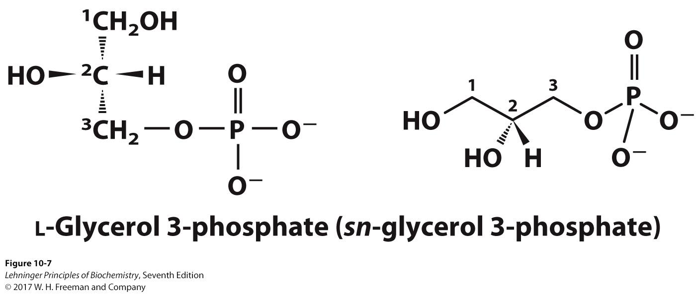
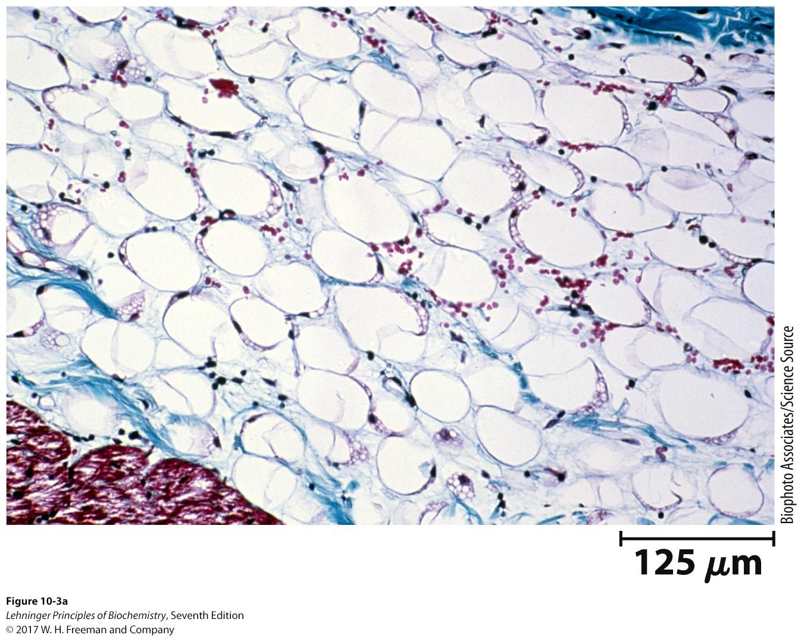
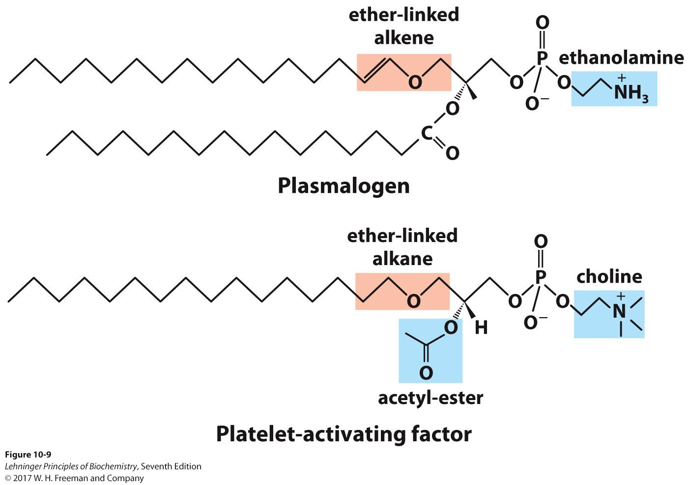
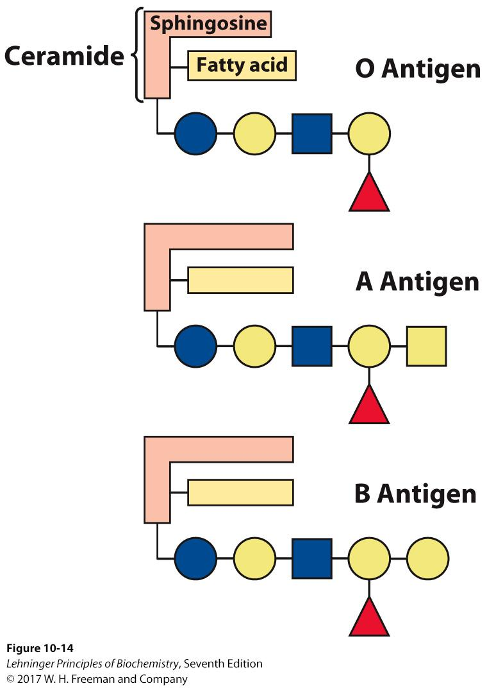
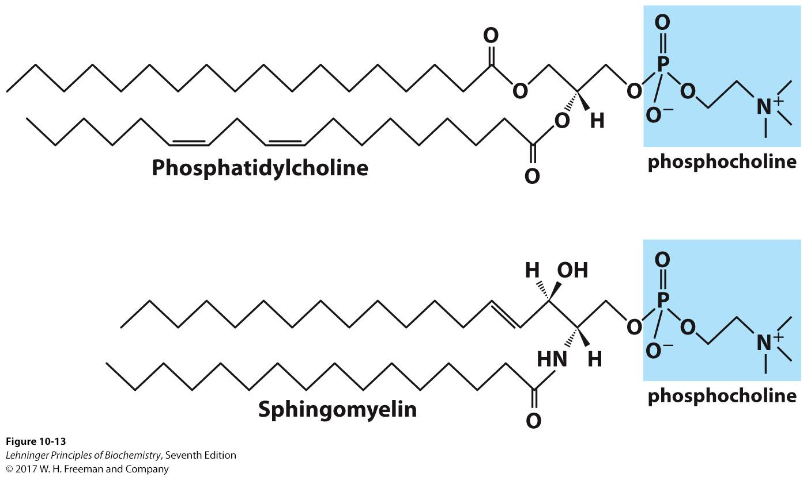
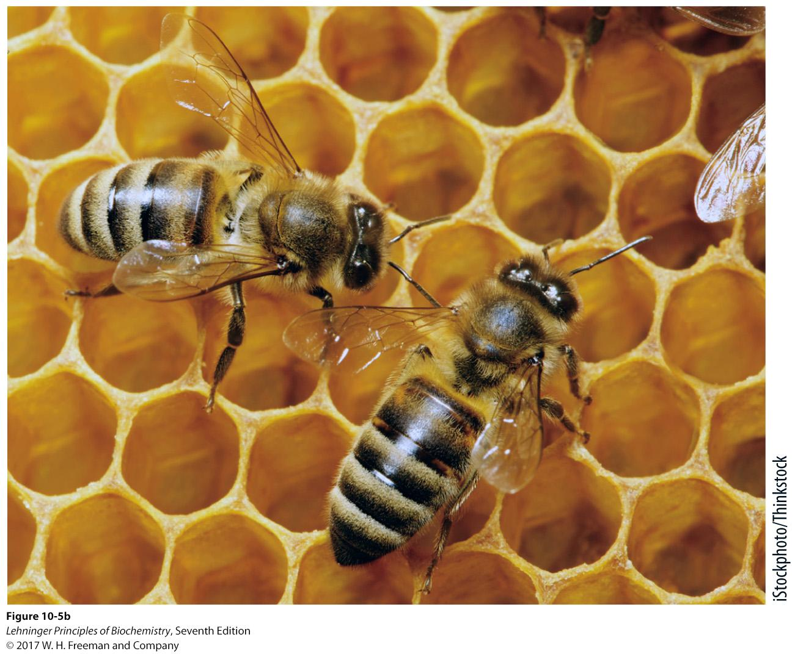
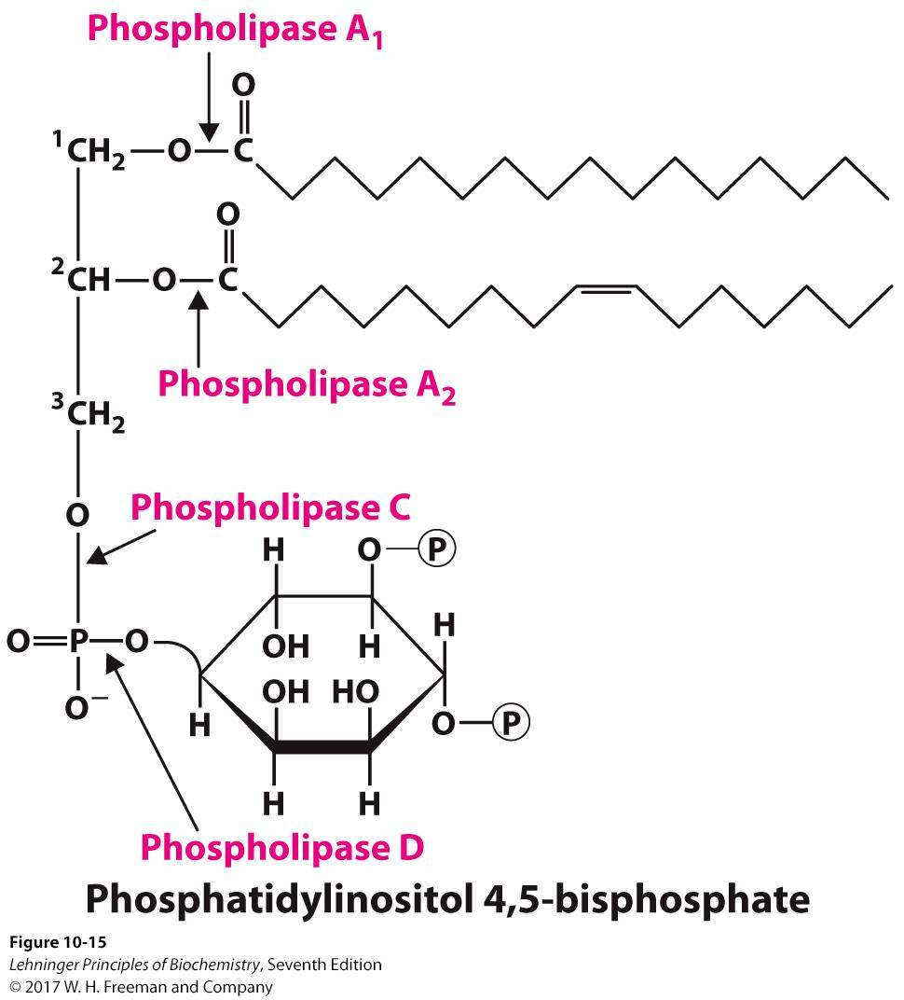
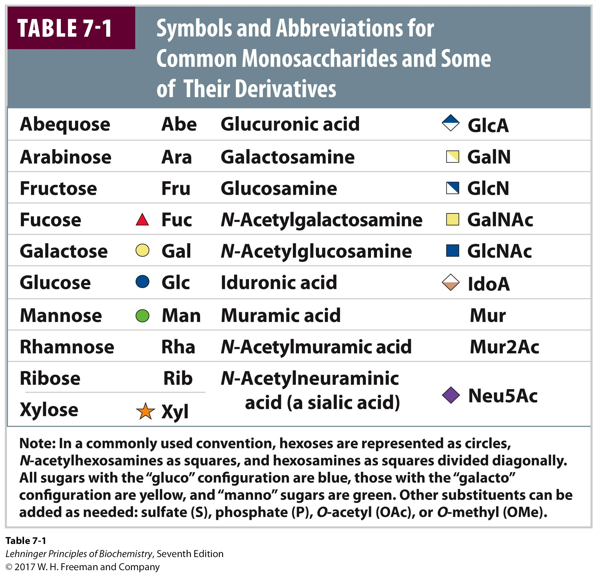
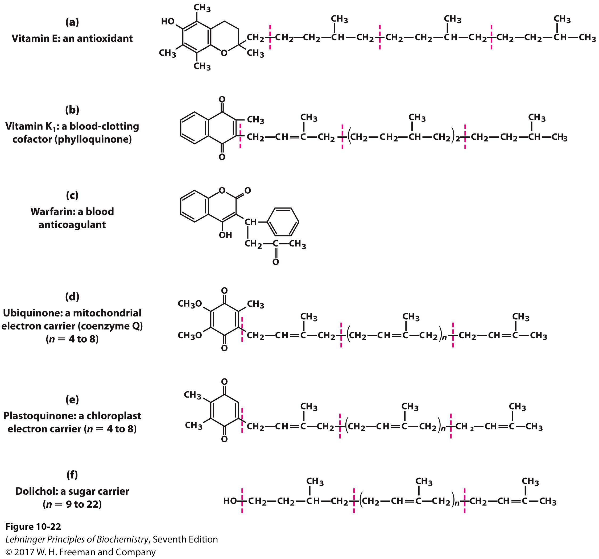

10 | Lipídios

© 2017 W. H. Freeman and Company
CAPÍTULO 10 — Lipídios
Objetivos de aprendizagem:
- Papéis biológicos dos lipídios
- Estrutura e propriedades dos lipídios de armazenamento
- Estrutura e propriedades dos lipídios de membrana
- Estrutura e propriedades dos lipídios sinalizadores
Lipídios: Classe Estruturalmente Diversa
Moléculas orgânicas caracterizadas pela baixa solubilidade em água, ou seja, são relativamente hidrofóbicas.
Funções Biológicas dos Lipídios
- Armazenamento de energia
- compostos reduzidos: muita energia disponível
- natureza hidrofóbica: bom empacotamento
- Isolamento do ambiente
- baixa condutividade térmica
- alta capacidade calorífica (podem “absorver” calor) proteção mecânica (podem absorver choques)
- Repelente de água
- natureza hidrofóbica: mantém seca a superfície do organismo
- previne umedecimento excessivo (aves)
- previne perda de água por evaporação
- Controle de flutuabilidade e acústica em mamíferos marinhos
- aumento da densidade ao mergulhar fundo ajuda a afundar (apenas uma hipótese)
órgão do espermacete pode focar energia sonora: arma de atordoamento acústico?
Mais Funções
- Estrutura de membrana
- estrutura principal das membranas celulares
- Cofatores para enzimas
- vitamina K: formação de coágulos sanguíneos
- coenzima Q: síntese de ATP nas mitocôndrias
- Moléculas sinalizadoras
- hormônios parácrinos (atuam localmente)
- hormônios esteroides (atuam em todo o corpo)
- fatores de crescimento
- vitaminas A e D (precursores hormonais)
- Pigmentos
- cor de tomates, cenouras, abóboras, algumas aves
- Antioxidantes
Lipídios Podem Fornecer Pigmento

Classificação dos Lipídios
- Duas categorias principais baseadas na estrutura e função:
- Lipídios que contêm ácidos graxos (lipídios complexos)
- podem ser ainda separados em:
- lipídios de armazenamento e lipídios de membrana
- Lipídios que não contêm ácidos graxos: colesterol, vitaminas, pigmentos, etc.

Ácidos Graxos
- Ácidos carboxílicos com cadeias hidrocarbônicas contendo entre 4 e 36 carbonos
- Quase todos os ácidos graxos naturais têm um número par de carbonos.
- A maioria dos ácidos graxos naturais não é ramificada.
- Saturados: sem ligações duplas entre carbonos na cadeia
- Monoinsaturados: uma ligação dupla entre carbonos na cadeia alquílica
- Poli-insaturados: mais de uma ligação dupla na cadeia alquílica

Nomenclatura de Ácidos Graxos
- Ácidos graxos podem ser descritos por (exemplo):
- nome sistemático: ácido cis-9-octadecenoico
- nome comum: ácido oleico
- numeração delta do esqueleto carbônico: 18:1Δ9
- descreve a localização do primeiro carbono do alceno em relação ao carbono carbonílico
- numeração ômega do esqueleto carbônico: 18:1ω9
- descreve a localização do primeiro carbono do alceno em relação ao metil terminal

Nomenclatura de Ácidos Graxos
TABELA 10-1 Alguns Ácidos Graxos de Ocorrência Natural: Estrutura, Propriedades e Nomenclatura (Solubilidade a 30 °C
(mg/g solvente))
| 12:0 |
CH3(CH2)10COOH |
Ácido n-dodecanoico |
Ácido láurico (latim laurus, “loureiro”) |
44,2 |
0,063 |
2.600 |
| 14:0 |
CH3(CH2)12COOH |
Ácido n-tetradecanoico |
Ácido mirístico (latim Myristica, gênero da noz-moscada) |
53,9 |
0,024 |
874 |
| 16:0 |
CH3(CH2)14COOH |
Ácido n-hexadecanoico |
Ácido palmítico (latim palma, “palmeira”) |
63,1 |
0,0083 |
348 |
| 18:0 |
CH3(CH2)16COOH |
Ácido n-octadecanoico |
Ácido esteárico (grego stear, “gordura dura”) |
69,6 |
0,0034 |
124 |
| 20:0 |
CH3(CH2)18COOH |
Ácido n-eicosanoico |
Ácido araquídico (latim Arachis, gênero de leguminosa) |
76,5 |
|
|
| 24:0 |
CH3(CH2)22COOH |
Ácido n-tetracosanoico |
Ácido lignocérico (latim lignum, “madeira” + cera, “cera”) |
86,0 |
|
|
aTodos os ácidos são mostrados em sua forma não ionizada. Em pH 7, todos os ácidos graxos livres possuem um carboxilato ionizado. Observe que a numeração dos átomos de carbono começa no carbono carboxílico.
bO prefixo n- indica a estrutura linear “normal”. Por exemplo, “dodecanoico” indica simplesmente 12 átomos de carbono, que poderiam estar dispostos em uma variedade de formas ramificadas; “n-dodecanoico” especifica a forma linear, não ramificada. Para ácidos graxos insaturados, a configuração de cada ligação dupla é indicada; em ácidos graxos biológicos a configuração é quase sempre cis.
Nomenclatura de Ácidos Graxos
TABELA 10-1 Alguns Ácidos Graxos de Ocorrência Natural: Estrutura, Propriedades e Nomenclatura (Solubilidade a 30 °C
(mg/g solvente))
| 16:1(Δ9) |
CH3(CH2)5CH= CH(CH2)7COOH |
Ácido cis-9-hexadecenoico |
Ácido palmitoleico |
1 a –0,5 |
|
|
| 18:1(Δ9) |
CH3(CH2)7CH= CH(CH2)7COOH |
Ácido cis-9-octadecenoico |
Ácido oleico (latim oleum, “óleo”) |
13,4 |
|
|
| 18:2(Δ9,12) |
CH3(CH2)4CH= CHCH2CH= CH(CH2)7COOH |
Ácido cis,cis-9,12-octadecadienoico |
Ácido linoleico (grego linon, “linho”) |
1–5 |
|
|
| 18:3(Δ9,12,15) |
CH3CH2CH= CHCH2CH= CHCH2CH= CH(CH2)7COOH |
Ácido cis,cis,cis-9,12,15-octadecatrienoico |
Ácido α-linolênico |
211 |
|
|
| 20:4(Δ5,8,11,14) |
CH3(CH2)4CH= CHCH2CH= CHCH2CH= CHCH2CH= CH(CH2)3COOH |
Ácido cis,cis,cis,cis-5,8,11,14-icosatetraenoico |
Ácido araquidônico |
–49,5 |
|
|
aTodos os ácidos são mostrados em sua forma não ionizada. Em pH 7, todos os ácidos graxos livres possuem um carboxilato ionizado. Observe que a numeração dos átomos de carbono começa no carbono carboxílico.
bO prefixo n- indica a estrutura linear “normal”. Por exemplo, “dodecanoico” indica simplesmente 12 átomos de carbono, que poderiam estar dispostos em uma variedade de formas ramificadas; “n-dodecanoico” especifica a forma linear, não ramificada. Para ácidos graxos insaturados, a configuração de cada ligação dupla é indicada; em ácidos graxos biológicos a configuração é quase sempre cis.
Nomenclatura de Ácidos Graxos
- Ácidos graxos ômega-3 são nutrientes essenciais.
- Humanos precisam deles, mas não conseguem sintetizá-los.
- Eles incluem ALA, DHA e EPA.
- embora DHA e EPA possam ser sintetizados a partir de ALA
Solubilidade e Ponto de Fusão dos Ácidos Graxos
- Solubilidade
- diminui à medida que o comprimento da cadeia aumenta
- Ponto de Fusão
- diminui à medida que o comprimento da cadeia diminui
- diminui à medida que o número de ligações duplas aumenta

Ponto de Fusão e Ligações Duplas
- Ácidos graxos saturados empacotam-se de maneira bastante ordenada.
- extensas interações favoráveis
- Ácidos graxos insaturados cis empacotam-se de maneira menos ordenada devido à dobra.
- interações favoráveis menos extensas
- É necessária menos energia térmica para desorganizar o empacotamento desordenado dos ácidos graxos insaturados.
- Ácidos graxos insaturados cis têm ponto de fusão mais baixo.

Ácidos Graxos Trans
- Ácidos graxos trans formam-se por desidrogenação parcial de ácidos graxos insaturados.
- feita para aumentar a vida útil ou a estabilidade em altas temperaturas de óleos usados na culinária (especialmente frituras)
- Uma ligação dupla trans permite que um determinado ácido graxo adote uma conformação estendida.
- Ácidos graxos trans podem empacotar-se mais regularmente e apresentam pontos de fusão mais altos do que as formas cis.
- Consumir gorduras trans aumenta o risco de doenças cardiovasculares.
- Evite frituras em óleos vegetais parcialmente hidrogenados.
- Tendência atual: reduzir gorduras trans nos alimentos.
TABELA 10-2 — Oito Principais Categorias de Lipídios Biológicos
| Ácidos graxos |
FA |
Oleato, estearoil-CoA, palmitoilcarnitina |
| Glicerolipídios |
GL |
Di- e triacilgliceróis |
| Glicerofosfolipídios |
GP |
Fosfatidilcolina, fosfatidilserina, fosfatidiletanolamina |
| Esfingolipídios |
SP |
Esfingomielina, gangliosídeo GM2 |
| Lipídios esteróis |
ST |
Colesterol, progesterona, ácidos biliares |
| Lipídios prenóis |
PR |
Farnesol, geraniol, retinol, ubiquinona |
| Sacarolipídios |
SL |
Lipopolissacarídeo |
| Policetídeos |
PK |
Tetraciclina, eritromicina, aflatoxina B1 |
Triacilgliceróis (Apolares)
- A maioria dos ácidos graxos nos sistemas biológicos é encontrada na forma de triacilgliceróis.
- Os sólidos são chamados de gorduras.
- Os líquidos são chamados de óleos.
- A principal forma de armazenamento de lipídios (gordura corporal)
- Menos solúveis em água do que os ácidos graxos devido à esterificação do grupo carboxilato
- Menos densos que a água: gorduras e óleos flutuam.
Gorduras Fornecem Armazenamento Eficiente de Combustível
- A vantagem das gorduras sobre os polissacarídeos:
- Os ácidos graxos carregam mais energia por carbono porque são mais reduzidos.
- Os ácidos graxos carregam menos água por grama porque são apolares.
- Glicose e glicogênio servem para necessidades energéticas de curto prazo e entrega rápida.
- Gorduras servem para necessidades energéticas de longo prazo (meses), bom armazenamento e entrega lenta.
Gorduras Fornecem Armazenamento Eficiente de Combustível

Ceras
- Ceras são ésteres de ácidos graxos saturados e insaturados de cadeia longa com álcoois de cadeia longa.
- Insolúveis e têm altos pontos de fusão
- Variedade de funções:
- armazenamento de combustível metabólico no plâncton
- proteção e flexibilidade para pelos e pele em vertebrados
- impermeabilização de penas em aves
- proteção contra evaporação em plantas tropicais e heras
- usadas pelas pessoas em loções, pomadas e polidores

Cera: O Material do Favo de Mel
A cera de abelha é uma mistura de um grande número de lipídios, incluindo ésteres de triacontanol e um alcano de cadeia longa, o hentriacontano.

Lipídios Estruturais em Membranas (Polares)
- Contêm grupos cabeça polares e caudas apolares (geralmente ácidos graxos ligados)
- A diversificação pode vir de:
- modificar um esqueleto diferente
- alterar os ácidos graxos
- modificar os grupos cabeça
- As propriedades dos grupos cabeça determinam as propriedades de superfície das membranas.
- Diferentes organismos têm diferentes composições de grupos cabeça nos lipídios de membrana.
- Diferentes tecidos têm diferentes composições de grupos cabeça nos lipídios de membrana.
Glicerofosfolipídios
- Constituintes primários das membranas celulares
- Dois ácidos graxos formam ligações éster com o primeiro e o segundo grupos hidroxila do L-glicerol-3-fosfato.
- O grupo fosfato é carregado em pH fisiológico.

Estrutura Geral dos Glicerofosfolipídios
- Ácidos graxos insaturados são comumente encontrados conectados ao C2 do glicerol-3-fosfato.
- O grupo fosfato altamente polar pode ser ainda esterificado por um álcool; tais grupos substituintes são chamados de grupos cabeça.
Exemplos de Glicerofosfolipídios

Fosfatidilcolina
- A fosfatidilcolina é o principal componente da maioria das membranas celulares eucarióticas.
- Muitos procariotos, incluindo E. coli, não conseguem sintetizar esse lipídio; suas membranas não contêm fosfatidilcolina.
Éter-Lipídios: Plasmalogênio
- Análogo éter vinílico da fosfatidiletanolamina
- Comum no tecido cardíaco de vertebrados
- Também encontrado em alguns protozoários e bactérias anaeróbias
- Função não é bem compreendida
- resistente à clivagem por lipases comuns, mas clivado por algumas lipases específicas
- Aumenta a rigidez da membrana?
- Fontes de lipídios sinalizadores?
Éter-Lipídios: Plasmalogênio
Éter-Lipídios: Fator Ativador de Plaquetas
- Análogo éter alifático da fosfatidilcolina
- O ácido acético esterifica a posição C2
- Primeiro lipídio sinalizador a ser identificado
- Estimula a agregação de plaquetas sanguíneas
- Desempenha papel na mediação da inflamação

Esfingolipídios
- O esqueleto dos esfingolipídios NÃO é o glicerol.
- O esqueleto dos esfingolipídios é um aminoálcool de cadeia longa, a esfingosina.
- Um ácido graxo é unido à esfingosina por meio de uma ligação amida, em vez de uma ligação éster como geralmente visto em lipídios.
- Um grupo cabeça polar é conectado à esfingosina por uma ligação glicosídica ou fosfodiéster.
- Os glicoesfingolipídios contendo açúcar são encontrados principalmente na face externa das membranas plasmáticas.
Esfingolipídios

Esfingomielina
- Ceramida (esfingosina + ácido graxo ligado por amida) + fosfocolina ligada ao álcool
- A esfingomielina é abundante na bainha de mielina que envolve algumas células nervosas em animais.

A Esfingomielina É Estruturalmente Semelhante
à Fosfatidilcolina

Glicoesfingolipídios e Grupos Sanguíneos
- Os grupos sanguíneos são determinados em parte pelo tipo de açúcares localizados nos grupos cabeça dos glicoesfingolipídios.
- A estrutura do açúcar é determinada pela expressão de glicosiltransferases específicas.
- Indivíduos sem glicosiltransferase ativa terão o antígeno O.
- Indivíduos com uma glicosiltransferase que transfere um grupo N-acetilgalactosamina têm grupo sanguíneo A.
- Indivíduos com uma glicosiltransferase que transfere um grupo galactose têm grupo sanguíneo B.
Glicoesfingolipídios Determinam Grupos Sanguíneos
Lipídios Estruturais e Sinalizadores São Degradados no Lisossomo
A maioria das células degrada e substitui continuamente seus lipídios de membrana.
Fosfolipídios são degradados pelas fosfolipases A−D.
Cada fosfolipase cliva uma ligação específica.
Gangliosídeos são degradados por meio de uma série de clivagens enzimáticas.
A falha na degradação correta dos gangliosídeos resulta no acúmulo de lipídios nos lisossomos, uma disfunção categorizada como “doenças de armazenamento lisossômico”.

Disfunções na Reciclagem de Gangliosídeos Levam a uma Variedade de Distúrbios Médicos

Esteróis e Colesterol
- Esterol
- núcleo esteroide: quatro anéis fusionados
- grupo hidroxila (cabeça polar) no anel A
- várias cadeias laterais apolares
- A estrutura tetracíclica dos esteróis é quase planar.

Papel Fisiológico dos Esteróis
- O colesterol e esteróis relacionados estão presentes nas membranas da maioria das células eucarióticas.
- modulam a fluidez e a permeabilidade
- espessam a membrana plasmática
- sem esteróis na maioria das bactérias
- Os mamíferos obtêm colesterol dos alimentos ou o sintetizam de novo no fígado.
- O colesterol, ligado a proteínas, é transportado aos tecidos por meio dos vasos sanguíneos.
- O colesterol em lipoproteínas de baixa densidade (LDL) tende a depositar-se e obstruir artérias.
- Muitos hormônios são derivados de esteróis.
Hormônios Esteroides
- Esteroides são derivados oxidados de esteróis.
- Esteroides possuem o núcleo esterol, mas carecem da cadeia alquílica encontrada no colesterol.
- Eles são mais polares que o colesterol.
- Hormônios esteroides são sintetizados a partir do colesterol nas gônadas e glândulas adrenais.
- São transportados pelo corpo na corrente sanguínea, geralmente ligados a proteínas carreadoras.
- Muitos dos hormônios esteroides são hormônios sexuais masculinos e femininos.
Hormônios Esteroides

Lipídios Biologicamente Ativos
Estão presentes em quantidades muito menores do que os lipídios de armazenamento ou estruturais
Desempenham papéis vitais como moléculas sinalizadoras entre células próximas
Vitaminas lipossolúveis (A, D, E e K)
Derivados do Ácido Araquidônico como Lipídios Sinalizadores
- A oxidação enzimática do ácido araquidônico produz:
- prostaglandinas (inflamação e febre)
- tromboxanos (formação de coágulos sanguíneos)
- leucotrienos (contração do músculo liso nos pulmões)

A Vitamina A (Retinol) É Derivada do β-Caroteno
- Envolvida no pigmento visual
- Precursora de outros hormônios envolvidos na sinalização

Vitaminas E, K e Outras Quinonas Lipídicas São Antioxidantes

Vitaminas E, K e Outras Quinonas Lipídicas São Antioxidantes

Vitaminas E, K e Outras Quinonas Lipídicas São Antioxidantes

Capítulo 10: Resumo
Neste capítulo, aprendemos que:
- lipídios são uma classe estrutural e funcionalmente diversa de moléculas pouco solúveis em água
- triacilgliceróis são os principais lipídios de armazenamento fosfolipídios são os principais constituintes das membranas
- esfingolipídios desempenham papéis no reconhecimento celular
- o colesterol é tanto um lipídio de membrana quanto o precursor de hormônios esteroides alguns lipídios transportam sinais de célula para célula e de tecido para tecido